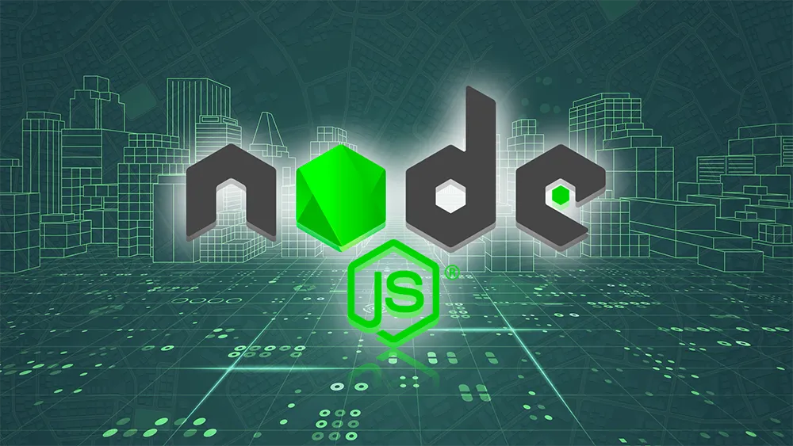

Asterisk-AMI

Toda a operação de uma empresa de portaria remota depende de telefonia. Quando alguém aperta o interfone na portaria de um condomínio, essa ligação cai direto na central de monitoramento da empresa de segurança, que pode estar em qualquer cidade, às vezes em outro estado. É basicamente o coração da operação: sem telefonia funcionando, não tem atendimento. Em maio de 2021, na época como desenvolvedor fullstack júnior na One Portaria, recebi do CEO uma demanda que parecia simples: montar um relatório sobre as ligações da empresa. O problema é que, pra chegar nesse relatório, praticamente não existia nenhum dado estruturado sobre essa operação de telefonia. Foi daí que nasceu o Asterisk-AMI.
O problema por trás do pedido
A ideia inicial do CEO era bem pontual: um relatório escrito com números sobre as ligações da empresa. Comecei analisando a central telefônica que a One usava, o Asterisk, tentando entender se dava pra simplesmente puxar esses dados direto do banco dela. Nessa etapa contei com apoio de um especialista em centrais de telefonia IP, que me ajudou a entender o funcionamento por dentro de uma central. Depois de um tempo investigando ficou claro que não ia rolar abstrair os dados que eu precisava direto do banco de dados da central. Eu ia precisar de outro caminho.
A solução: escutar as ligações em tempo real
Resolvi criar uma API em NodeJS que se conecta na central telefônica através da Asterisk Manager Interface (AMI), a interface que o próprio Asterisk expõe justamente pra permitir que aplicações externas monitorem e acompanhem os eventos da central em tempo real: início e fim de chamada, quem discou pra quem, transferências, tempo de duração, entre outros. Essa API fica escutando esses eventos o tempo todo e grava tudo em um banco de dados que eu também desenhei do zero. Em seguida, a própria API sincroniza esses dados com o sistema principal da One, e foi só a partir dessa sincronização que o relatório pedido pelo CEO finalmente ganhou vida.
O projeto levou cerca de 3 meses pra sair do papel, entre maio e agosto de 2021. Contei com apoio de um especialista em centrais de telefonia IP pra entender o funcionamento da central por dentro, e de um desenvolvedor sênior que ficou mais no escopo de ideias e apoio em pontos complexos do processo, mas a engenharia e o desenvolvimento do projeto como um todo ficaram sob minha responsabilidade.
Tecnologias
O Asterisk-AMI foi construído do zero, utilizando:
- NodeJS
- Asterisk Manager Interface (AMI)
- API REST
- Banco de dados relacional (MySQL) desenhado especificamente pra essa operação
- Sincronização de dados com o sistema principal da One
O que esse projeto abriu depois
Apesar da demanda original ser bem pontual, um relatório, desenhei essa API já pensando em escala e seguindo boas práticas de projeto, e isso fez toda diferença mais pra frente. Anos depois ela continua rodando e virou a base de outros produtos importantes da empresa, entre eles o B.I, que hoje traz mais de 85 gráficos sobre a operação, e o painel que mostra em tempo real as ligações acontecendo na empresa. Nenhum desses produtos existiria sem essa camada de captura de dados criada aqui. Hoje o Asterisk-AMI roda em 100% dos clientes da One Portaria, antigos e novos, e é a espinha dorsal de tudo o que envolve dados de ligação dentro da empresa.
Minha contribuição e desafios
Fui o engenheiro e desenvolvedor principal do projeto, da análise da central telefônica até a finalização da API e a sincronização com o sistema principal. O maior desafio foi justamente encontrar uma forma de abstrair os dados que precisávamos, já que a saída óbvia (puxar direto do banco da central) não era viável. Recorrer ao monitoramento em tempo real via AMI foi a solução que encontrei, e o fato de ter desenhado a API com preocupação de escalabilidade desde o início, mesmo pra um escopo pequeno, foi o que permitiu que ela virasse base pra produtos muito maiores depois.
←Voltar ao portfólio